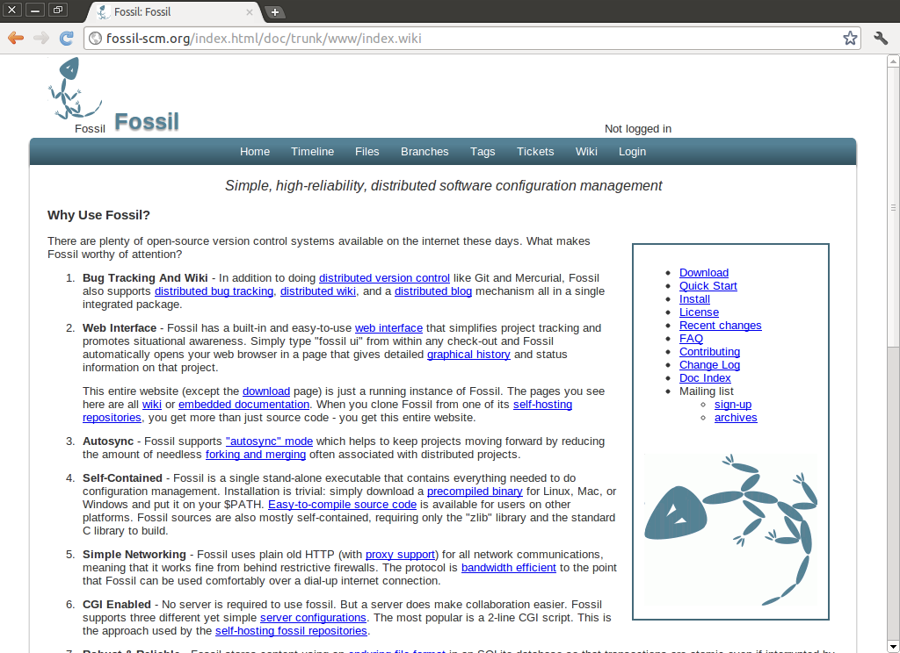
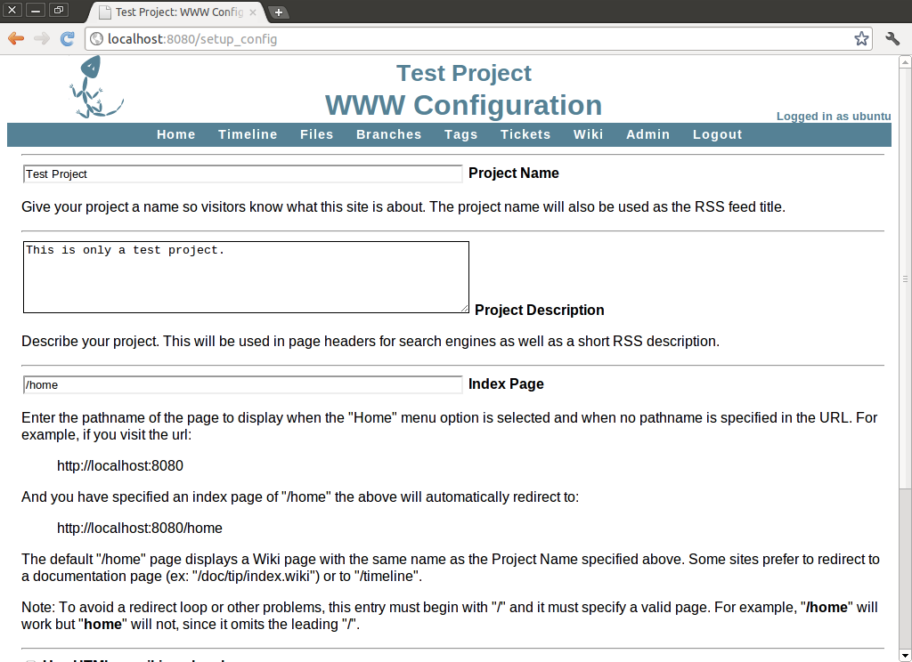
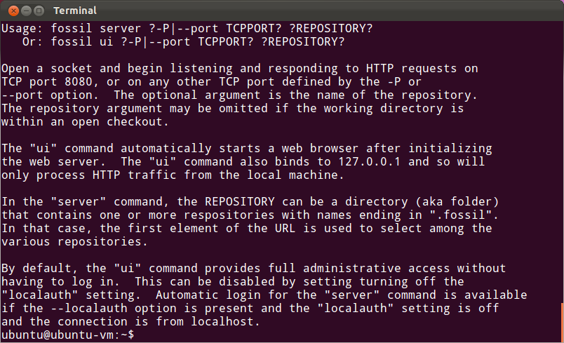
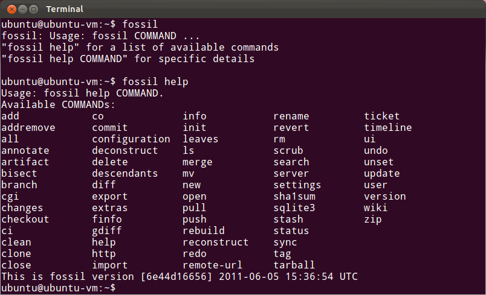

也紀念我們永遠的朋友 李士傑先生（Shih-Chieh Ilya Li）。
分散式版本控制系統的新選擇－Fossil
Fossil 簡介
對於程式設計師而言，日常工作中最常使用的工具，可能會是編輯器，或專為某種程式語言所設計的整合開發環境；而對負責大型軟體開發工作的軟體團隊成員來說，版本控制系統則是另一套相當重要的軟體工具。如果沒有版本控制系統，大型軟體的開發團隊成員將難以有效控制軟體版本，並可能導致程式臭蟲增加。
目前在 UNIX/Linux 系統之中，已經存在許多成熟的版本控制系統，例如較為知名的 Git、Subversion 或 CVS 等等。若以架設方式加以細分，則有分散式與 Client-Server 二種不同的系統分類。除了這些系統以外，網路上還可以找到許多其他各具特色的版本控制系統。雖然這些系統的知名度較低，但如果仔細檢視其優點與特色，仍然可以找到一些頗為出色的版本控制系統。本文所要介紹的 Fossil，便是一套採用分散式處理方式的版本控制系統。
- 官方網站：https://www.fossil-scm.org/index.html/doc/trunk/www/index.wiki
- 下載網址：https://www.fossil-scm.org/download/fossil-src-20111021125253.tar.gz (2.5MB)
Fossil 的特色所在
一般人對於軟體本身的使用需求，多半是希望操作越簡單越好，並有相當程度的穩定性與可靠性。而操作簡單與系統本身穩定性高，正是 Fossil 所強調的二大重點。一般人即使沒有使用版本控制軟體的經驗，也能在閱讀 Fossil 提供的簡單文件之後立即上手。在穩定性方面，Fossil 採用 SQLite 資料庫作為資料儲存的平台，再加上永久性的檔案結構，所以即使在使用中遭遇系統不正常斷電或主機元件毀損等問題，資料也不會損失。但此處所指的主機元件，應不包括磁碟在內，畢竟磁碟毀損時，儲存其中的資料將無一倖免，除非尋求資料救援公司的協助。但即使如此，Fossil 的穩定性仍然有其獨到之處。Fossil 的官方網站甚至提出數據，宣稱過去三年多之內，沒有任何遞交 (commit) 至 Fossil 資料庫的資料因為任何原因而損毀。而 Fossil 目前也正在研發新的保護機制，在未來的版本中將會提供自動檢查機制。只要資料一經遞交，系統便會自動進行資料庫內容的驗證，以確保所有的資料內容正常無誤。有賴這些功能設計，Fossil 在可靠性方面表現相當突出，值得信賴，目前許多知名專案或網站，都已經採用 Fossil 作為版本控制系統，或是官方網站的平台，例如 SQLite 專案、Tcl/Tk 專案、The Brick Engine 遊戲引擎等等。
Fossil 之所以可以作為官方網站的平台，是因為除了版本控制系統相關的功能以外，亦提供了程式臭蟲追蹤 (Bug Tracking) 與維基共筆系統的支援能力。與本身的版本控制系統功能類似，Fossil 的程式臭蟲追蹤功能與維基共筆系統採用分散式的處理方式。除此之外，亦可利用 Fossil 作為 Blog 平台的架設解決方案。所以無論使用者需要的是單純的版本控制，或是希望架設網站作為資訊分享的平台，都能利用 Fossil 一併解決。
如果無法理解 Fossil 如何同時提供維基共筆系統與 Blog 等相關功能，或許可以參考 Fossil 官方網站的設計。Fossil 官網本身就是使用 Fossil 架設而成，除了檔案下載的頁面以外，其他都是以 Fossil 的維基共筆系統或內嵌文件製作而成。所以在取得 Fossil 之後，不只獲得 Fossil 本身的原始碼，還取得了一整個網站系統的架設方案。
▲ 圖1：Fossil 官方網站也是以 Fossil 架設而成，許多開放原始碼專案的官方網站，也採用了 Fossil 作為網站系統使用。
許多版本控制系統為了讓使用者加快操作時的處理速度，而使用文字介面的命令， Fossil 也採用這種設計方式。然而，雖然在熟悉文字介面後就可以很迅速得輸入指令，但對於不習慣文字操作介面的使用者而言，文字介面並不容易上手。網路上有許多針對各種版本控制系統設計的圖形前端介面，但若使用 Fossil 則不需要另行尋找相關的圖形操作介面，Fossil 本身已經整合了一套以網頁型式作為操作介面的圖形化管理介面。這套網頁操作介面相當容易，而且可以簡化專案追蹤的過程，或是修改相關的設定。使用 Fossil 的圖形化介面時，只要先開啟任一專案，再輸入「fossil ui」指令，系統便會自動開啟網頁瀏覽器，並顯示該專案相關的修改履歷，以及目前的狀態資訊等資料。
▲ 圖2：Fossil 主要以文字介面指令進行操作，但也內建了一套圖形介面。
在專案發展的過程當中，程式碼可能會不斷地分支 (Forking) 或合併 (Merging)。在某些情況下，不必要的分支與合併可能會產生許多額外的檔案，不但浪費磁碟空間，也可能會導致分支版本過多而不易管理。為了解決這樣的問題，Fossil 提供了一項名為自動同步 (Autosync) 的功能，可以讓不同的使用者在變更資料後自動進行同步，確保資料可以維持在最新狀態。自動同步是 CVS 或 Subversion 所使用的同步模式，也是 Fossil 預設的操作模式。如果不希望採用自動同步模式，則可以透過修改設定將此功能關閉，此時 Fossil 便會採用 GIT 或 Mercurial 等系統所使用的手動合併模式 (Manual-merge)。採用手動合併模式時，需要自行決定合併資料的時機，並執行相關的指令。Fossil 之所以預設採用自動同步模式，是因為 Fossil 的作者發現自動同步模式可以有效避免無效分支或合併資料的產生，並且確保所有的使用者都能取得相同版本的檔案。雖然 Fossil 也支援手動合併模式，但建議還是以自動同步作為預設的使用模式，並將手動合併方式保留作為離線操作時使用。
在安裝方面，Fossil 也維持了簡便的一貫風格。Fossil 本身以單一執行檔的方式存在，並以此執行檔涵括所有功能的支援。由於 Fossil 支援 Linux、Mac 與 Windows 等各種不同的平台，因此需要安裝 Fossil 時，只要前往官網並下載預先編譯好的 Fossil 執行檔，並將此執行檔放置於 PATH 環境變數所指定的目錄之下，即可直接執行。一些 Linux 發行版本的套件管理系統亦直接內建 Fossil 的套件，例如在 Ubuntu 系統中，只要執行「sudo apt-get install fossil」指令，即可完成 Fossil 的安裝工作。如果要使用 Fossil 之平台並未擁有預先編譯好的 Fossil 執行檔，則可以直接下載 Fossil 的原始檔並加以編譯。編譯 Fossil 的過程也不困難，只要確認系統已經安裝 zlib 程式庫與標準的 C 語言程式庫，便能完成編譯。
Fossil 不僅在操作介面與安裝上設計簡潔，其技術方面也未使用太多高深的技巧。以網路通訊為例，Fossil 使用單純的 HTTP 通訊協定，並提供代理伺服器的支援功能。如此一來，即使是在重重限制的防火牆之後使用 Fossil，也能輕易通過防火牆的規則正常使用 Fossil。此外，因為 HTTP 通訊協定利用頻寬的效率較高，因此並不需要準備大流量的網路連線。如果以較為極端的方式進行測試，即使執行 Fossil 的環境是以撥接上網，Fossil 仍然可以相當順暢的執行，並不會因為網路頻寬變小而讓人有執行過於緩慢的感受。
使用 Fossil 時並不需要任何伺服器軟體的支援（例如網頁伺服器、資料庫伺服器等等），但如果可以讓 Fossil 採用伺服器的架構進行運作，則可以讓整個協同作業變得更加容易。Fossil 本身支援三種不同的伺服器工作模式，分別是 CGI 描述檔、inetd 與 xinetd 等三種。雖然三種伺服器工作模式的運作方式各有不同，但相同的是 Fossil 都能以相當簡單的方式採用其中一種方法作為伺服器使用。以 CGI 描述檔的運作方式為例，只要撰寫一個只有二行內容的描述檔，並放置在正確的目錄中，即可讓 Fossil 立即以伺服器的方式進行運作。也因為 CGI 描述檔的方式相當簡單，因此在使用 Fossil 的社群當中，採用此一方式讓 Fossil 以伺服器方式進行運作，是最常見的手法。而使用伺服器方式執行 Fossil 時，除了可以使用「fossil server」指令進行處理以外，亦可利用 Fossil 內建的圖形處理介面（「fossil ui」指令）。二者的差別在於 server 參數會立即執行一個網頁伺服器以便供其他主機的使用者進行連結與操作，但 ui 參數則會立即啟動瀏覽器並開啟內建的圖形介面。此時只有本機端可以進行各種操作，其他主機無法透過網路前來連接或存取 Fossil 所存放的資料。
▲ 圖3：Fossil 不需要任何伺服器即可執行，但亦可使用內建的伺服器功能，讓其他主機存取存放於 Fossil 之中的資料。
Fossil 與 Git 的比較
同為版本控制系統的 Git 已推出多年，許多人對於 Git 都有相當時間的使用經驗，因此難免會有人要詢問換用 Fossil 的理由何在。同樣採用分散式處理方式的 Git 與 Fossil在表面看來只有採用授權模式的不同（Git 採用 GPL，Fossil 則使用 BSD 授權），但實際上存在更多差異。最明顯的一點，是 Git 與 Fossil 雖然主要都使用文字命令進行操作，但 Fossil 內建了一套圖形介面，可供使用者進行基本的操作或設定等功能。儘管網路上也能找到許多 Git 的圖形化介面程式，但多半要另行安裝，不像 Fossil 直接整合在程式之中。
除此之外，Fossil 的操作相當直覺，也沒有複雜的命令。每一個 Fossil 的命令都有線上輔助文件可以參考，只要使用「fossil help 」的指令即可立即查詢。另外，由於每一個命令只負責處理某一個動作，因此不需要記憶許多複雜的參數或是指令組合。官網所提供的快速入門手冊，更可以讓新手立即了解 Fossil 的基本操作方式。相較之下，Linus Torvalds 當年為了管理 Linux 核心而開發了 Git，此一決定受到許多人的質疑，因為 Git 十分艱澀難懂（參考資料來源）。或許使用一段時間後，大多數人都能習慣 Git 的指令與操作方式，但對於剛接觸版本控制系統的新手而言，Git 恐怕不易上手。
▲ 圖4：Fossil 的線上輔助說明文件提供了所有指令的操作說明，且每一個 Fossil 指令都只負責一件工作，相較之下單純許多。
另外，Fossil 並非只是單純的版本控制系統，它本身內建了維基共筆系統、Blog、程式臭蟲追蹤，以及使用者管理等功能。由於大型專案的開發經常需要建立許多文件，也可能面臨許多程式臭蟲的問題，因此只是單純使用一套版本控制系統可能無法完全滿足專案開發上的需求。但 Fossil 已經事先整合了大多數可能使用到的功能或系統，所以在專案開發的過程中可以減少許多不必要的時間浪費。
有些人可能會認為 Fossil 即使整合了圖形介面，其操作畫面仍然十分醜陋，完全沒有美感可言。但因為 Fossil 是一套由程式設計師針對其他程式開發人員所設計開發的管理系統，再加上本身並沒有經費另外設計使用者介面，所以畫面上難免有些陽春，不過其功能並不會因此而有所減少，足以應付大多數的專案開發計畫。
Fossil 操作簡介
Fossil 與其他版本控制系統相同，主要使用的都是儲藏庫 (Repository) 的概念。儲藏庫可以視為一種資料庫，其中存放了專案相關的檔案與履歷等資料。使用者處理這些檔案時，需要先將資料取出 (Check Out) 並存放至本地端的樹狀結構中，也就是使用者的工作目錄。等到完成了新增、修改等各種工作，再將本地端的資料回存 (Check In) 至儲藏庫之中，即可完成整個處理作業。也就是說，在使用 Fossil 時，主要的動作有三項：新增或複製儲藏庫、取出資料、進行資料處理與存取等工作。
專案開始執行時，需要新增一個儲藏庫，此時可以使用「fossil init 」指令建立一個新的儲藏庫。儲藏庫是以檔案方式存在於系統之中，所以執行此指令之後，便可在檔案系統中找到以儲藏庫名稱命名的檔案。大多數 Fossil 的操作都針對本地磁碟中的儲藏庫進行處理，如果需要存取遠端系統中的儲藏庫，則需要先使用「clone」指令將遠端儲藏庫複製到本地磁碟中，再進行後續處理。其指令格式為「fossil clone 」，會將 所指定的遠端儲藏庫複製到本地磁碟之中，並以指定的儲藏庫名稱加以儲存。如果要存取的遠端儲藏庫需要使用帳號與密碼才能進行讀取，則可以在 URL 之中直接加上相關資訊，例如「fossil clone https://:@ 」。
儲藏庫名稱可以使用任何命名方式，例如以 .fossil 作為副檔名，或是完全不使用任何副檔名。Fossil 並未限制儲藏庫的命名規則，所以是否在儲藏庫名稱上加上副檔名，並不會影響 Fossil 的運作。但因為儲藏庫是以檔案的方式存放於本地磁碟之中，因此建議加上一個易於識別的副檔名，才不至於在整理磁碟之中的檔案時，不曉得該檔案的用途而誤刪儲藏庫檔案。
除了重新建立一個儲藏庫，或是以複製方式將現有的 Fossil 儲藏庫儲存到本地磁碟以外，Fossil 也支援 Git 專案的資料匯入功能。使用「fossil import --git 」的指令，即可將 Git 所建立的專案資料匯入至指定的 Fossil 儲藏庫檔案。要特別注意的是，目前 Fossil 僅支援 git-fast-export 指令所匯出的檔案，尚未支援其他版本控制系統所產生的資料檔格式，但在未來的版本之中則可能會再針對此部份進行加強。除此之外，匯入 Git 資料時，Fossil 會從標準輸入裝置讀取所有的資料，這也是何以 import 指令並未提供相關參數以指定資料來源的原因。
在專案儲藏庫建立或複製完成後，接下來需要將此專案 Check Out 至本地目錄之中。此時可以先行建立一個新目錄，切換至此目錄，再執行「fossil open 」的指令，以便將儲藏庫中所存放的資料取出並放置在此目錄。取出資料時，Fossil 預設使用最新版本的資料。如果希望取得先前版本的資料，則需要在執行 open 指令時，一併指定版本編號。執行過「open」指令後，即可執行 Fossil 儲藏庫的相關指令，例如「fossil info」、「fossil status」可以用來查詢儲藏庫存放資料的內容，或是儲藏庫本身的目前狀態。而「fossil changes」指令則可以回報目前已取出資料的編輯狀態，並且可以加上「--abs-paths」或「--rel-paths」以決定路徑顯示時使用絕對路徑或相對路徑。如果加上「--sha1sum」參數，則可以使用 SHA1 雜湊演算法檢驗檔案的正確性。
如果想比對已取出的檔案與現有版本的不同，則可以使用「fossil diff」指令。使用「diff」指令時，可以指定要比對的檔案名稱，以直接進行該檔案的比對工作。如果未指定檔案名稱，則會顯示在目前的工作目錄中，已經修改但尚未儲存的各個檔案狀態。如果想查詢專案的活動歷程，則可以使用「fossil timeline」指令。使用「timeline」指令時，可以利用「before」、「after」等參數並指定一個日期與時間，表示只顯示此時間點之前或之後的存入履歷。「timeline」指令預設最多顯示 20 筆資料，但也可以利用「-n」參數指定最多顯示筆數。如果想知道目前工作目錄下存在哪些檔案，則可以利用「fossil ls」指令加以顯示。「ls」指令會列出該專案在目前狀態下所擁有的檔案，如果加上「-l」參數，則會額外顯示這些檔案的狀態。例如有新檔案被加入或移出此專案，則會顯示「ADDED」或「DELETED」。如果檔案未經過變更，則會顯示「UNCHANGED」。已經被編輯過的檔案則是以「EDITED」狀態加以顯示。
在某些特定的使用場合下，使用者可能希望將現有的資料進行分支處理 (branch)，將來如果發生問題，就可以回到原先的分支點再繼續進行處理。Fossil 本身也支援這種分支處理功能，使用「fossil branch」指令。「branch」指令需要搭配許多子命令進行處理，例如要建立一個新分支，需要使用「fossil branch new 」的指令格式。其中「新分支名稱」是新的分支點所要採用的名稱，「分支來源」則指定此分支從何處開始進行分支。以預設的專案內容來說，Fossil 會先使用「trunk」作為預設的分支名稱。如果要從此處再進行分支，則指令格式會是「fossil branch new trunk」的形式。分支也可以加上背景顏色以作為顯示時的區別，使用「--bgcolor 」參數即可。「顏色值」是以十六進位呈現的的格式，也就是一般網頁原始檔所慣用的「#RRGGBB」格式。如果想知道現有分支點的清單，則可以使用「fossil branch ls」參數進行查詢。
在專案進行的過程中，可能需要新增許多檔案至儲藏庫之中，也有可能要移除現有的檔案。此時可以使用「fossil add 」或「fossil rm 」的指令，將指定的檔案加入儲藏庫，或是從儲藏庫之中移除。如果覺得一一加入或移除檔案的方式有些麻煩，則可以直接使用「fossil addremove」指令。「addremove」指令會自動比對儲藏庫與本地目錄中的檔案清單，如果有檔案存在於本地目錄，但並未在儲藏庫之中出現，則會自動將此檔案加入儲藏庫之中。相反的，如果檔案只出現在儲藏庫，但本地目錄中找不到該檔案，則 Fossil 會自動將此檔案自儲藏庫之中移除。
檔案只要一經處理，無論是進行編輯，或使用了「add」、「rm」等指令新增、刪除了部份檔案，都需要在最後執行一次「fossil commit」指令，以便將所有變更寫入儲藏庫之中。以「fossil addremove」指令為例，雖然會自動比對儲藏庫與本地目錄下的檔案差異，並進行檔案的新增與刪除工作，但只有在執行過「commit」指令後，這些變更才會完全生效。如果所有工作都已經完成，此時可以執行「fossil close」指令，以便關閉與儲藏庫之間的連線，並且可以重新開啟另一個儲藏庫以進行其他專案的處理工作。
以上所介紹的僅是 Fossil 最基本的操作方式，並未完整涵蓋 Fossil 所有的指令與其參數。如果想更加了解 Fossil 所有的指令與參數使用方式，可以參考Fossil 官方網站所提供的指令說明文件，或是常見問答集的說明。
結語
大多數人在習慣某一套工具之後，除非有重大理由，否則多半不會更換自己所慣用的系統，因此像 Fossil 這種軟體，多半會讓人感到有些困惑，不能理解為什麼作者要再推出一套相同性質的軟體。但只要實際使用過 Fossil，便能了解 Fossil 並非只是一套單純的版本控制系統而已，而是整個專案開發過程中都可以使用的完整解決方案。
作者簡介
翁卓立 逢甲大學資訊工程學系、台灣科技大學電子所畢業，目前擔任韌體研發工作，主要使用 Embedded Linux 進行產品開發。著有「Linux 進化特區：Ubuntu 10.04 從入門到精通」等書
OSSF Newsletter : 第 187 期 PaaS：程式語言開發在雲端「Programming in Paas」（上）
Tags: Fossil, Version Control System, Distributed Revision Control,
Category: Tech Column
Special


Address：No.128, Sec.2, Academia Rd., Institute of Information Science, Academia Sinica, Nangang District, Taipei City 11529, Taiwan (R.O.C).
Privacy Policy. Terms-of-use

Comments